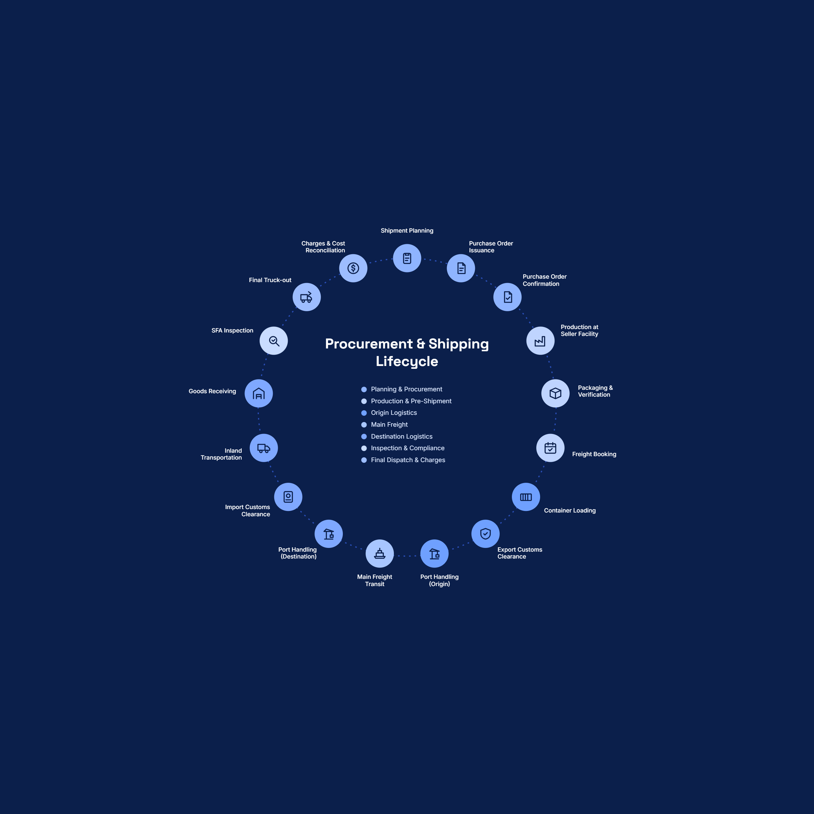

Discovery Workshop · Service Design
Supply Chain Discovery Workshop
Uncovering workflow gaps across the supply chain lifecycle to identify stakeholder needs and opportunities for a more connected, unified system.

Overview
Initial context. The supply chain client approached us with an initial set of supply chain pain points and a goal to better connect vendors and customers across the supply chain lifecycle.
Why the discovery was needed. Their existing workflows relied heavily on manual processes, making tasks time-consuming and susceptible to human error. Multiple points of contact also contributed to inconsistencies, while potential gaps across the broader lifecycle remained unexplored.
Workshop objective. The discovery workshop aimed to consolidate existing findings, uncover underlying challenges, and align stakeholders around a clearly defined problem statement. This would establish the foundation for a tailored proposal addressing the client's needs and opportunities for improvement.
Workshop outcomes and outputs. Before the workshop, we aligned with the client on the expected outputs and outcomes to establish a clear direction.
Outputs included a vision statement, high-level As-Is and To-Be journey maps, needs statements, collective ideas, and prioritised actionables to guide the next phase of solution development.
Outcomes focused on aligning stakeholders around a shared vision, fostering a user-centred mindset, and building deeper empathy for users' needs and pain points.
Challenge
Initial context. The supply chain client approached us with an initial set of supply chain pain points and a goal to better connect vendors and customers across the supply chain lifecycle.
Approach
2 to 3 sentences on how you ran discovery: methods, who you spoke to, how you brought stakeholders in.
Day 1 Activities
2 to 3 sentences on what you designed or recommended, and why.

Day 2 Activities
2 to 3 sentences on what you designed or recommended, and why.
Day 3 Activities
2 to 3 sentences on what you designed or recommended, and why.
Key insights
-
Insight one
One or two lines on what you learned.
-
Insight two
One or two lines on what you learned.
-
Insight three
One or two lines on what you learned.
Outcome
-
Metric
What changed, in one line.
-
Metric
What changed, in one line.
-
Metric
What changed, in one line.
Reflection
2 to 3 sentences on what you learned and what you would do differently.
Next project